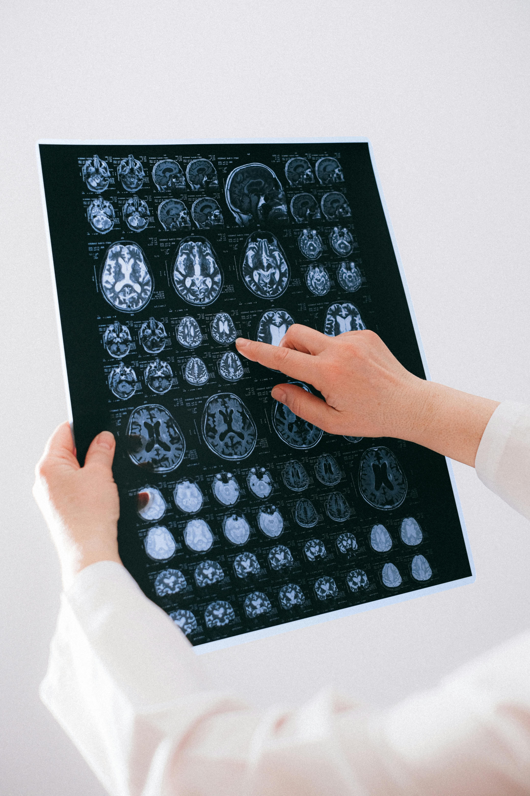

What is Mental Health?
Mental health refers to a person’s emotional, psychological, and social well-being. It affects how we think, feel, and act. It also helps determine how we handle stress, relate to others, and make choices. Mental health is important at every stage of life, from childhood and adolescence through adulthood.


Common Mental Health Issues
- Depression
- Anxiety Disorders
- Stress
- Post-Traumatic Stress Disorder (PTSD)
- Eating Disorders
- Obsessive-Compulsive Disorder (OCD)
Help & Resources
If you or someone you know is struggling with mental health, it is important to seek help. Below are some resources to consider:
- National Suicide Prevention Lifeline: Call 1-800-273-TALK (1-800-273-8255)
- Therapists and Counselors: Find a licensed mental health professional in your area.
- Support Groups: Join support groups to connect with others going through similar challenges.
Self-Care Tips
Taking care of your mental health is essential. Here are a few self-care tips that might help:
- Practice mindfulness or meditation.
- Get enough sleep and rest.
- Exercise regularly.
- Talk to someone you trust about your feelings.
- Limit time on social media.